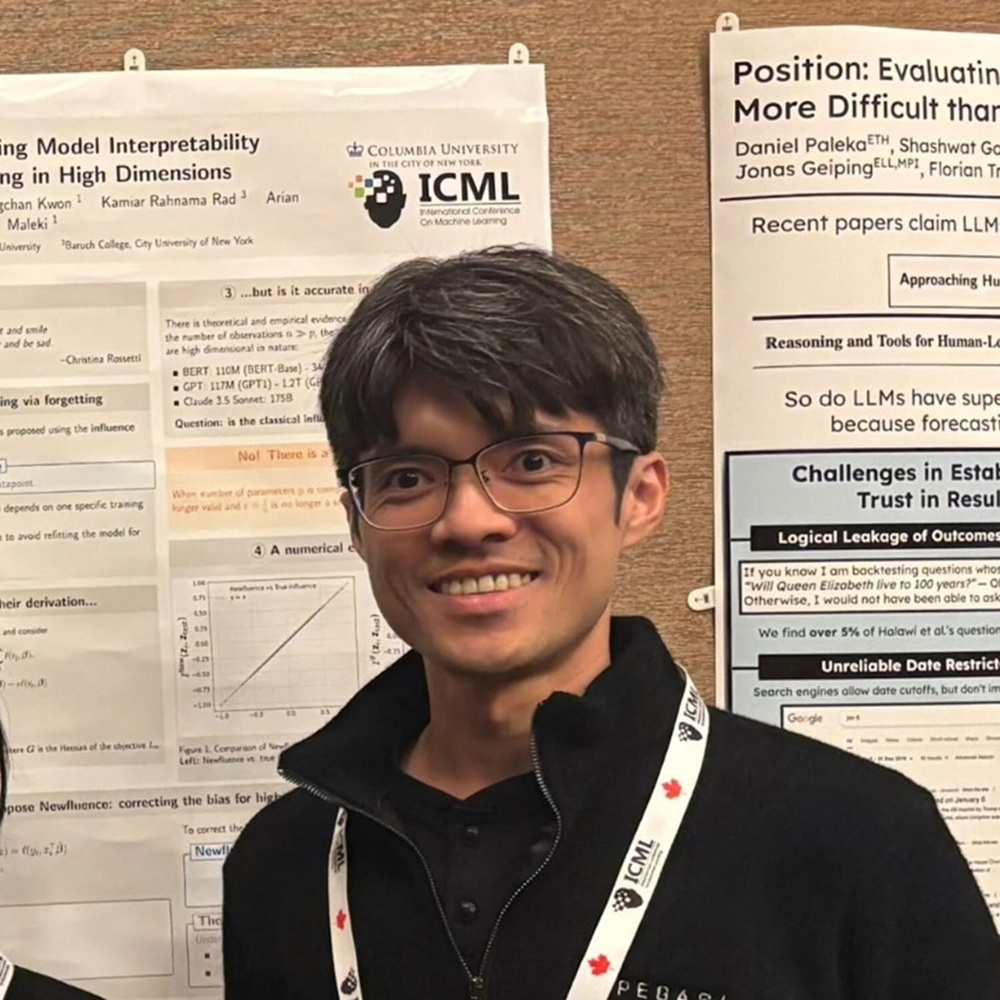

Let's learn how to learn.
Developing novel neural architectures that incorporate quantum mechanical principles for solving complex many-body problems. This work bridges classical machine learning with quantum physics to create more efficient and interpretable models.
Automated design of neural networks that respect physical conservation laws and symmetries. This approach leads to more robust and generalizable models for scientific applications.